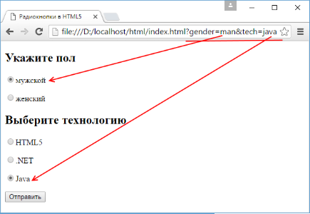

Флажки и переключатели
Флажок
Флажок представляет элемент, который может находиться в двух состояниях: отмеченном и неотмеченном.
Флажок создается с помощью элемента input с атрибутом type="checkbox":
input type="checkbox" checked name="html5"
input type="checkbox" name="dotnet"
input type="checkbox" name="java"
button type="submit">Отправить<
Атрибут checked позволяет установить флажок в отмеченное состояние.
Переключатели
Переключатели или радиокнопки похожи на флажки, они также могут находиться в отмеченном или неотмеченном состоянии.
Только для переключателей можно создать одну группу, в которой одновременно можно выбрать только один переключатель.
Например:
Укажите пол
input type="radio" value="man" checked name="gender"
input type="radio" value="woman" name="gender"
Выберите технологию
input type="radio" value="html5" checked name="tech"
input type="radio" value="net" name="tech"
input type="radio" value="java" name="tech"
button type="submit">Отправить<
Для создания радиокнопки надо указать атрибут type="radio". И теперь другой атрибут name указывает не н имя элемента,
а на имя группы, к которой принадлежит элемент-радиокнопка. В данном случае у нас две группы радиокнопок: gender и tech.
Из каждой группы мы можем выбрать только один переключатель. Чтобы отметить радиокнопку, у нее устанавливается атрибут checked.
Важное значение играет атрибут value, который при отправке формы позволяет серверу определить,
какой именно переключатель был отмечен:
